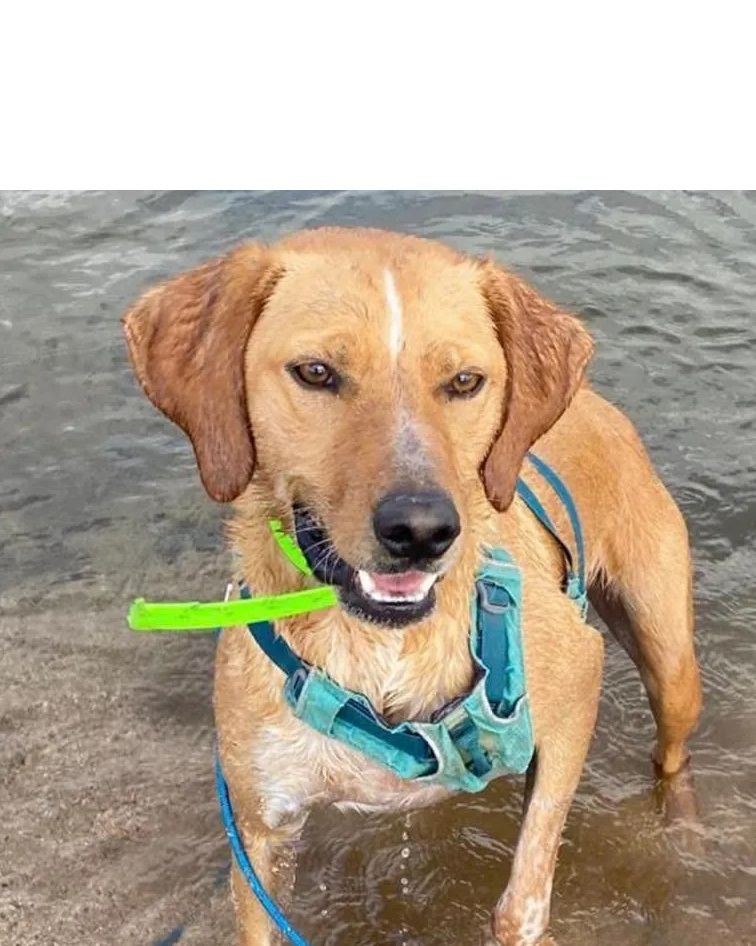
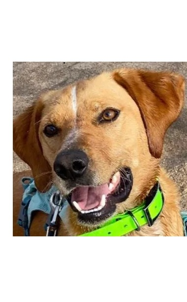
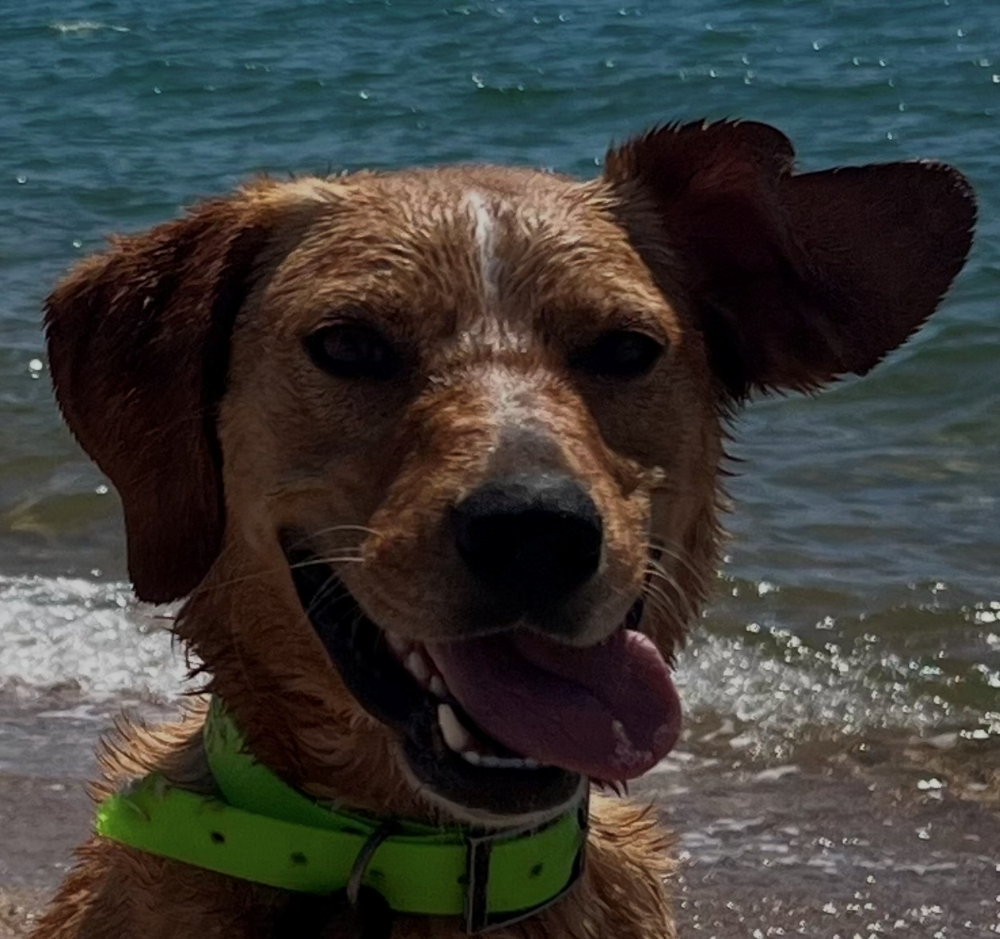

Shumi — Chien x Berger à adopter à Ajaccio



Vidéos
2 ans Vacciné, identifié & stérilisé 🐶 : OK 🐱 : Pas Ok
Impossible de résister à son regard, à son sourire et à sa joie de vivre communicative. 💖.
Shumi est un compagnon joueur, affectueux et toujours prêt pour une séance de câlins. Curieux et enthousiaste, il adore partir à l'aventure, découvrir de nouveaux horizons et partager chaque instant avec les humains qu'il aime.
Shumi recherche désespérément son humain préféré, celui avec lequel il pourra construire une relation unique faite de complicité, de tendresse et de belles escapades.
Association responsable
S.C.D.A. - Refuge Caldaniccia
📍 Route de Caldaniccia, Z.I de Baleone, Sarrola-Carcopino (20167)